Project to compare different AI algorithms and an exploration of how to improve their accuracy.
ai
linear regression
classification
clustering
machine learning
Author
Brandon Toews
Published
December 22, 2022
1 Project Overview
1.1 Purpose of Document
The purpose of this document is to provide a comparison between different AI models for a given dataset to determine which models are most accurate. This document also explores what measures can be taken to improve accuracy in various AI models.
1.2 Scope
The scope of the project involves an exploratory examination of a dataset to determine how best to sample and clean the data for AI training and testing purposes. Various data visualizations are needed to properly understand the dataset and how best to proceed with training models. Training of various models and algorithms are required to produce sufficient comparisons with the ultimate goal of improving accuracy.
2 Dataset Exploratory Analysis
2.1 Descriptive Analysis
The dataset used in this project consists of available independent variables for a variety of cars to ascertain how they affect the price. The chosen dataset contains 26 columns and 205 rows of data with no null values. It is a sufficient dataset in terms of size and types of data for use in training univariate & multivariate linear regression, classification and clustering models.
The Columns
Car_ID : Unique id of each observation (Integer)
Symboling : Its assigned insurance risk rating, A value of +3 - Indicates that the auto is risky, -3 that it is probably pretty safe.
carCompany : Name of car company (Categorical)
fueltype : Car fuel type i.e gas or diesel (Categorical)
aspiration : Aspiration used in a car (Categorical)
doornumber : Number of doors in a car (Categorical)
carbody : Body of car (Categorical)
drivewheel : Type of drive wheel (Categorical)
enginelocation : Location of car engine (Categorical)
wheelbase : Wheelbase of car (Numeric)
carlength : Length of car (Numeric)
carwidth : Width of car (Numeric)
carheight : Height of car (Numeric)
curbweight : The weight of a car without occupants or baggage. (Numeric)
enginetype : Type of engine. (Categorical)
cylindernumber : Cylinder placed in the car (Numeric)
enginesize : Size of car (Numeric)
fuelsystem : Fuel system of car (Categorical)
boreratio : Boreratio of car (Numeric)
stroke : Stroke or volume inside the engine (Numeric)
compressionratio : Compression ratio of car (Numeric)
horsepower : Horsepower (Numeric)
peakrpm : Car peak rpm (Numeric)
citympg : Mileage in city (Numeric)
highwaympg : Mileage on highway (Numeric)
price(Dependent variable) : Price of car (Numeric)
Code
# Import libraries for analysis and plottingimport pandas as pdimport numpy as npimport matplotlib.pyplot as plt%matplotlib inlineimport seaborn as sns# Save data in Pandas dataframedataset = pd.read_csv("CarPrice_Assignment.csv")# Print how many rows and columns are in datasetprint('Dataset Shape:',dataset.shape)# Turn of max columns so that head() displays all columns in datasetpd.set_option('display.max_columns', None)pd.set_option('display.max_rows', 5)# Display 1st five entries of datasetdataset.head()
Dataset Shape: (205, 26)
car_ID
symboling
CarName
fueltype
aspiration
doornumber
carbody
drivewheel
enginelocation
wheelbase
carlength
carwidth
carheight
curbweight
enginetype
cylindernumber
enginesize
fuelsystem
boreratio
stroke
compressionratio
horsepower
peakrpm
citympg
highwaympg
price
0
1
3
alfa-romero giulia
gas
std
two
convertible
rwd
front
88.6
168.8
64.1
48.8
2548
dohc
four
130
mpfi
3.47
2.68
9.0
111
5000
21
27
13495.0
1
2
3
alfa-romero stelvio
gas
std
two
convertible
rwd
front
88.6
168.8
64.1
48.8
2548
dohc
four
130
mpfi
3.47
2.68
9.0
111
5000
21
27
16500.0
2
3
1
alfa-romero Quadrifoglio
gas
std
two
hatchback
rwd
front
94.5
171.2
65.5
52.4
2823
ohcv
six
152
mpfi
2.68
3.47
9.0
154
5000
19
26
16500.0
3
4
2
audi 100 ls
gas
std
four
sedan
fwd
front
99.8
176.6
66.2
54.3
2337
ohc
four
109
mpfi
3.19
3.40
10.0
102
5500
24
30
13950.0
4
5
2
audi 100ls
gas
std
four
sedan
4wd
front
99.4
176.6
66.4
54.3
2824
ohc
five
136
mpfi
3.19
3.40
8.0
115
5500
18
22
17450.0
Code
# Print data types and how many null values are presentdataset.info()
# Display some descriptive statisticsdataset.describe().round(2)
car_ID
symboling
wheelbase
carlength
carwidth
carheight
curbweight
enginesize
boreratio
stroke
compressionratio
horsepower
peakrpm
citympg
highwaympg
price
count
205.00
205.00
205.00
205.00
205.00
205.00
205.00
205.00
205.00
205.00
205.00
205.00
205.00
205.00
205.00
205.00
mean
103.00
0.83
98.76
174.05
65.91
53.72
2555.57
126.91
3.33
3.26
10.14
104.12
5125.12
25.22
30.75
13276.71
std
59.32
1.25
6.02
12.34
2.15
2.44
520.68
41.64
0.27
0.31
3.97
39.54
476.99
6.54
6.89
7988.85
min
1.00
-2.00
86.60
141.10
60.30
47.80
1488.00
61.00
2.54
2.07
7.00
48.00
4150.00
13.00
16.00
5118.00
25%
52.00
0.00
94.50
166.30
64.10
52.00
2145.00
97.00
3.15
3.11
8.60
70.00
4800.00
19.00
25.00
7788.00
50%
103.00
1.00
97.00
173.20
65.50
54.10
2414.00
120.00
3.31
3.29
9.00
95.00
5200.00
24.00
30.00
10295.00
75%
154.00
2.00
102.40
183.10
66.90
55.50
2935.00
141.00
3.58
3.41
9.40
116.00
5500.00
30.00
34.00
16503.00
max
205.00
3.00
120.90
208.10
72.30
59.80
4066.00
326.00
3.94
4.17
23.00
288.00
6600.00
49.00
54.00
45400.00
2.2 Cleaning
Multiple columns are object data types but for classification and clustering purposes they were converted to category types. Column 16, “cylindernumber”, values were changed from strings to integers to assist in training some of the linear regression models.
Code
# Convert object data types to category typesdataset['CarName'] = dataset['CarName'].astype('category')dataset['fueltype'] = dataset['fueltype'].astype('category')dataset['aspiration'] = dataset['aspiration'].astype('category')dataset['doornumber'] = dataset['doornumber'].astype('category')dataset['carbody'] = dataset['carbody'].astype('category')dataset['drivewheel'] = dataset['drivewheel'].astype('category')dataset['enginelocation'] = dataset['enginelocation'].astype('category')dataset['enginetype'] = dataset['enginetype'].astype('category')dataset['fuelsystem'] = dataset['fuelsystem'].astype('category')dataset['curbweight'] = dataset['curbweight'].astype('int')# Convert strings to integers in cylindernumber column to potentially use in the regression modelsdataset['cylindernumber'] = dataset['cylindernumber'].replace(['two'], 2).replace(['three'], 3)\.replace(['four'], 4).replace(['five'], 5).replace(['six'], 6).replace(['eight'], 8).replace(['twelve'], 12)dataset.head()
car_ID
symboling
CarName
fueltype
aspiration
doornumber
carbody
drivewheel
enginelocation
wheelbase
carlength
carwidth
carheight
curbweight
enginetype
cylindernumber
enginesize
fuelsystem
boreratio
stroke
compressionratio
horsepower
peakrpm
citympg
highwaympg
price
0
1
3
alfa-romero giulia
gas
std
two
convertible
rwd
front
88.6
168.8
64.1
48.8
2548
dohc
4
130
mpfi
3.47
2.68
9.0
111
5000
21
27
13495.0
1
2
3
alfa-romero stelvio
gas
std
two
convertible
rwd
front
88.6
168.8
64.1
48.8
2548
dohc
4
130
mpfi
3.47
2.68
9.0
111
5000
21
27
16500.0
2
3
1
alfa-romero Quadrifoglio
gas
std
two
hatchback
rwd
front
94.5
171.2
65.5
52.4
2823
ohcv
6
152
mpfi
2.68
3.47
9.0
154
5000
19
26
16500.0
3
4
2
audi 100 ls
gas
std
four
sedan
fwd
front
99.8
176.6
66.2
54.3
2337
ohc
4
109
mpfi
3.19
3.40
10.0
102
5500
24
30
13950.0
4
5
2
audi 100ls
gas
std
four
sedan
4wd
front
99.4
176.6
66.4
54.3
2824
ohc
5
136
mpfi
3.19
3.40
8.0
115
5500
18
22
17450.0
Code
# Print new data types and how many null values are presentdataset.info()
A pairplot ( See Figure 1 ) provides a quick overview of how the variables relate, showing some possibilities for training models. The ‘carbody’ ( See Figure 2 ) and ‘fueltype’ ( See Figure 3 ) columns show promise for use with the classification and clustering models ( See Figure 4 (f) & Figure 4 (g) ). Clear linear relationships exist between ‘carlength’, ‘carwidth’, ‘curbweight’, ‘enginesize’, ‘cylindernumber’ and ‘horsepower’ independent variables and the dependent variable ‘price’ ( See Figure 4 (a) - (f) ).
Code
# Display a pairplot to quickly see how varaiables relate to one another with 'fueltype' huesns.pairplot(dataset, kind='scatter', hue='fueltype')plt.show()
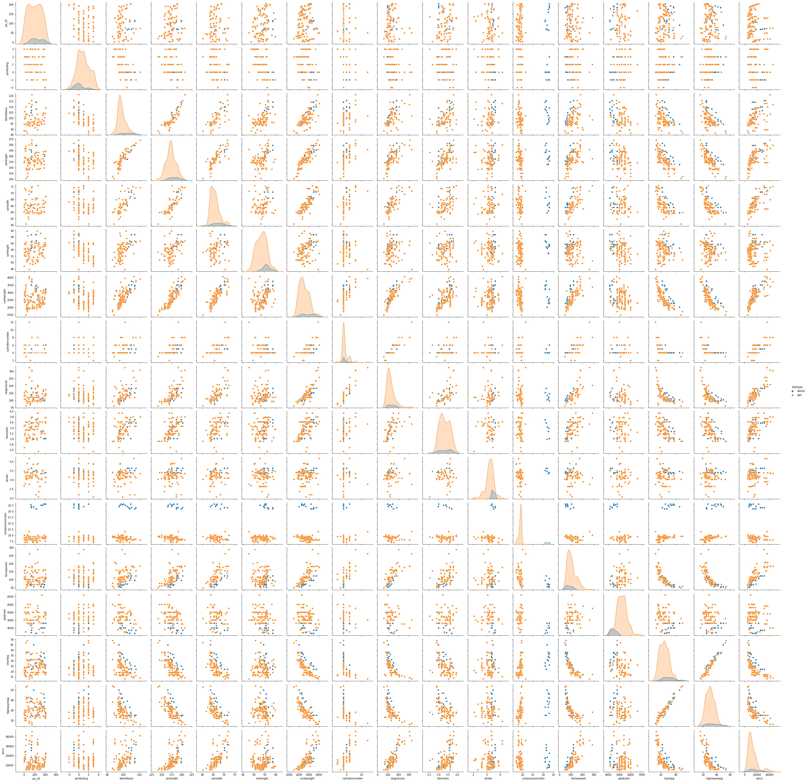
Figure 1. Pairplot with Fuel Type Hue
Code
# display pie chart data for carbodydataset['carbody'].value_counts().plot.pie(autopct='%1.3f%%');# Display relationship between body style and pricedataset.groupby('carbody')['price'].mean().round(2)
# display pie chart data for fueltypedataset['fueltype'].value_counts().plot.pie(autopct='%1.3f%%');# Display ralationship between body style and pricedataset.groupby('fueltype')['price'].mean().round(2)
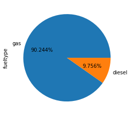
Figure 3. Fuel Type Pie Plot
fueltype
diesel 15838.15
gas 12999.80
Name: price, dtype: float64
Code
# Carlength has moderate relationship to priceplt.figure(figsize=(6,6));sns.regplot(data=dataset, x="carlength", y="price");# Carwidth has moderate relationship to priceplt.figure(figsize=(6,6));sns.regplot(data=dataset, x="carwidth", y="price");# Carweight has moderate/strong relationship to priceplt.figure(figsize=(6,6));sns.regplot(data=dataset, x="curbweight", y="price");# Engine size has strong relationship to pricesns.lmplot(data=dataset, x="enginesize", y="price", hue='fueltype', height=6)# Horsepower has strong relationship to price for both fuel typessns.lmplot(data=dataset, x="horsepower", y="price", hue='fueltype', height=6)# Cylinder number has moderate/strong relationship to pricesns.jointplot(data=dataset, x="cylindernumber", y="price", kind="reg");# Clear classification relationship between compressionratio and fueltypeg = sns.jointplot(data=dataset, x="compressionratio", y="price", hue='fueltype');g.plot_joint(sns.kdeplot, hue='fueltype');
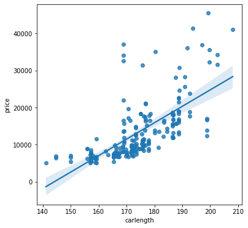
(a) Car Length vs Price
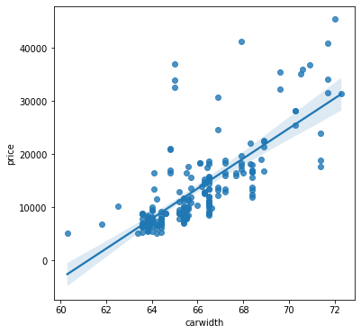
(b) Car Width vs Price
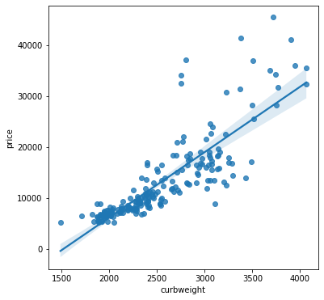
(c) Curb Weight vs Price
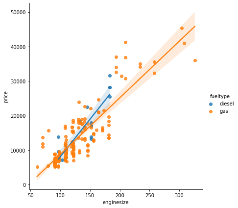
(d) Engine Size vs Price
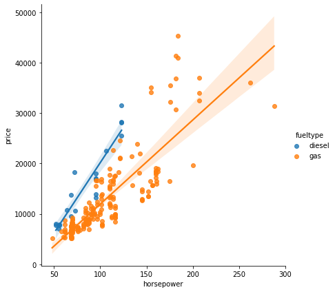
(e) Horsepower vs Price
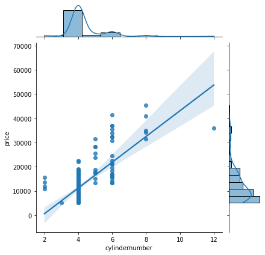
(f) Cylinder Number vs Price
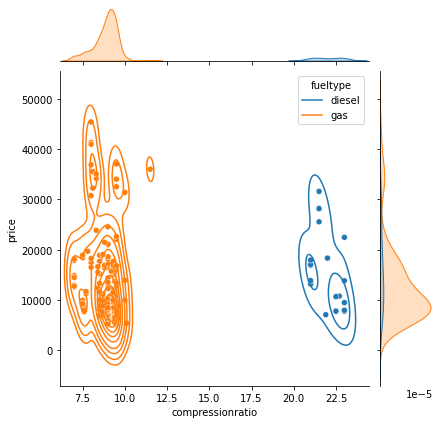
(g) Compression Ratio vs Price
Figure 4. Plots for visualizing
3 Linear Regression
3.1 Univariate Models
Multiple univariate models were trained for comparison using a custom Linear Regression training function. Models were trained with ‘carlength’, ‘carwidth’, ‘curbweight’, ‘cylindernumber’, ‘enginesize’ and ‘horsepower’ independent variables. In most cases the model accuracy was the best with a 70% training and 30% testing split ( See Items 3.1.1 - 3.1.4 ). However, with engine size and horsepower models more accuracy was achieved with an 80% training and 20% testing split ( See Items 3.1.5 - 3.1.6 ).
Code
# Import regression training libraries and packagesfrom sklearn.model_selection import train_test_splitfrom sklearn.linear_model import LinearRegressionfrom sklearn import metrics# Linear Regression training function that takes in X and Y arguments and displays resultsdef myLinRegModel(x, y, testSize):# While loop to iterate every 10% from given test sizewhile testSize>0:# Splitting data into training and testing variables using the values passed into function x_train, x_test, y_train, y_test = train_test_split(x, y, test_size=(testSize/100), random_state=0)# Training model with LinearRegression function and training data regressor = LinearRegression() regressor.fit(x_train, y_train)# Print test size of current iterationprint('Test Size:', testSize, '%\n')# Print intercept and CoEfficient values of modelprint("a =", regressor.intercept_)print("b =", regressor.coef_)# Test the trained model with test data and store in variable y_pred = regressor.predict(x_test)# Display predicted values next to actual values for comparison df = pd.DataFrame({'Actual': y_test, 'Predicted': y_pred})print(df)# Display accuracy of model predictions in the form of Mean Absolute Error, Mean Squared Error,# Root Mean Squared Error using the difference between actual and predicted valuesprint('Mean Absolute Error:', metrics.mean_absolute_error(y_test, y_pred))print('Mean Squared Error:', metrics.mean_squared_error(y_test, y_pred))print('Root Mean Squared Error:', np.sqrt(metrics.mean_squared_error(y_test, y_pred)))print('R2 Score: ', metrics.r2_score(y_test,y_pred)*100, '%\n', sep='')# Decrease test size by 10 testSize -=10
3.1.1 Car Length vs Price
Code
# Carlength ColumncarLength = dataset.iloc[:, 10:-15].values# Price Columnprice = dataset.iloc[:, 25].values.round(2)# Call custom regression model function with 30% test sizemyLinRegModel(carLength, price, 30)
Test Size: 30 %
a = -63541.11342037626
b = [440.33603117]
Actual Predicted
0 6795.0 6516.349139
1 15750.0 19153.993234
.. ... ...
60 6479.0 131.476687
61 15510.0 18625.589997
[62 rows x 2 columns]
Mean Absolute Error: 3981.584437549869
Mean Squared Error: 32715085.38508641
Root Mean Squared Error: 5719.71025359558
R2 Score: 50.45973947401606%
Test Size: 20 %
a = -63738.09854118214
b = [441.42013341]
Actual Predicted
0 6795.0 6491.844685
1 15750.0 19160.602514
.. ... ...
39 45400.0 24192.792035
40 8916.5 5079.300258
[41 rows x 2 columns]
Mean Absolute Error: 4528.295484564718
Mean Squared Error: 43469954.12056989
Root Mean Squared Error: 6593.174813439266
R2 Score: 43.84913586892223%
Test Size: 10 %
a = -66742.8631493445
b = [459.19742348]
Actual Predicted
0 6795.0 6315.446927
1 15750.0 19494.412981
.. ... ...
19 6488.0 6131.767957
20 9959.0 12698.291113
[21 rows x 2 columns]
Mean Absolute Error: 3945.9317457788898
Mean Squared Error: 29396652.85426334
Root Mean Squared Error: 5421.868022578873
R2 Score: 26.410928631260454%
3.1.2 Car Width vs Price
Code
# Carwidth ColumncarWidth = dataset.iloc[:, 11:-14].values# Price Columnprice = dataset.iloc[:, 25].values.round(2)# Call custom regression model function with 30% test sizemyLinRegModel(carWidth, price, 30)
Test Size: 30 %
a = -172630.60948546475
b = [2822.14912394]
Actual Predicted
0 6795.0 8551.364271
1 15750.0 15042.307256
.. ... ...
60 6479.0 7704.719534
61 15510.0 15042.307256
[62 rows x 2 columns]
Mean Absolute Error: 3036.57768015824
Mean Squared Error: 22710512.087679498
Root Mean Squared Error: 4765.554751304354
R2 Score: 65.60960571372881%
Test Size: 20 %
a = -172526.22359994025
b = [2819.03318321]
Actual Predicted
0 6795.0 8455.706762
1 15750.0 14939.483084
.. ... ...
39 45400.0 30444.165591
40 8916.5 6764.286852
[41 rows x 2 columns]
Mean Absolute Error: 3674.9155902799166
Mean Squared Error: 31370813.470780104
Root Mean Squared Error: 5600.965405247573
R2 Score: 59.47779746918066%
Test Size: 10 %
a = -181627.87173597398
b = [2957.89666431]
Actual Predicted
0 6795.0 8269.094113
1 15750.0 15072.256441
.. ... ...
19 6488.0 6494.356114
20 9959.0 11818.570110
[21 rows x 2 columns]
Mean Absolute Error: 3197.214272696799
Mean Squared Error: 19783555.22362383
Root Mean Squared Error: 4447.87086409035
R2 Score: 50.47553663690271%
3.1.3 Curb Weight vs Price
Code
# Curbweight ColumncarWeight = dataset.iloc[:, 13:-12].values# Price Columnprice = dataset.iloc[:, 25].values.round(2)# Call custom regression model function with 30% test sizemyLinRegModel(carWeight, price, 30)
Test Size: 30 %
a = -18679.037713196016
b = [12.40359272]
Actual Predicted
0 6795.0 4949.806413
1 15750.0 20404.682939
.. ... ...
60 6479.0 2568.316611
61 15510.0 15530.071001
[62 rows x 2 columns]
Mean Absolute Error: 2670.404540077829
Mean Squared Error: 18443910.151758883
Root Mean Squared Error: 4294.637371392244
R2 Score: 72.0704958192619%
Test Size: 20 %
a = -18833.605447325583
b = [12.47623193]
Actual Predicted
0 6795.0 4933.616372
1 15750.0 20479.001353
.. ... ...
39 45400.0 27515.596159
40 8916.5 4546.853183
[41 rows x 2 columns]
Mean Absolute Error: 3256.3206631106873
Mean Squared Error: 25249391.034916148
Root Mean Squared Error: 5024.877215904499
R2 Score: 67.3849408384091%
Test Size: 10 %
a = -19880.405624111718
b = [12.9537027]
Actual Predicted
0 6795.0 4796.398026
1 15750.0 20936.711595
.. ... ...
19 6488.0 6221.305324
20 9959.0 10819.869783
[21 rows x 2 columns]
Mean Absolute Error: 2695.197926817389
Mean Squared Error: 11737364.677960433
Root Mean Squared Error: 3425.9837533123873
R2 Score: 70.61768320191304%
3.1.4 Cylinder Number vs Price
Code
# Cylinder Number ColumncylinderNumber = dataset.iloc[:, 15:-10].values# Price Columnprice = dataset.iloc[:, 25].values.round(2)# Call custom regression model function with 30% test sizemyLinRegModel(cylinderNumber, price, 30)
Test Size: 30 %
a = -8750.74345729567
b = [5045.13677503]
Actual Predicted
0 6795.0 11429.803643
1 15750.0 21520.077193
.. ... ...
60 6479.0 11429.803643
61 15510.0 11429.803643
[62 rows x 2 columns]
Mean Absolute Error: 3944.3868255082953
Mean Squared Error: 26684225.038138304
Root Mean Squared Error: 5165.677597192676
R2 Score: 59.59223566856468%
Test Size: 20 %
a = -9046.162097201766
b = [5112.35112126]
Actual Predicted
0 6795.0 11403.242388
1 15750.0 21627.944630
.. ... ...
39 45400.0 31852.646873
40 8916.5 11403.242388
[41 rows x 2 columns]
Mean Absolute Error: 4280.5628888250285
Mean Squared Error: 32605207.611888204
Root Mean Squared Error: 5710.096987958103
R2 Score: 57.88330998687709%
Test Size: 10 %
a = -10564.254121382277
b = [5479.84028365]
Actual Predicted
0 6795.0 11355.107013
1 15750.0 22314.787580
.. ... ...
19 6488.0 11355.107013
20 9959.0 11355.107013
[21 rows x 2 columns]
Mean Absolute Error: 3464.088015146232
Mean Squared Error: 18346836.560473613
Root Mean Squared Error: 4283.32073985519
R2 Score: 54.072095495610604%
3.1.5 Engine Size vs Price
Code
# Engine Size ColumnengineSize = dataset['enginesize'].values.reshape(-1, 1)# Price Columnprice = dataset.iloc[:, 25].values.round(2)# Call custom regression model function with 30% test sizemyLinRegModel(engineSize, price, 30)
Test Size: 30 %
a = -7574.131488222356
b = [163.29075344]
Actual Predicted
0 6795.0 7285.327074
1 15750.0 18715.679815
.. ... ...
60 6479.0 7448.617828
61 15510.0 12184.049678
[62 rows x 2 columns]
Mean Absolute Error: 2898.9726929694702
Mean Squared Error: 14541824.65222288
Root Mean Squared Error: 3813.374444271488
R2 Score: 77.97940083865093%
Test Size: 20 %
a = -7613.370926304753
b = [164.31545176]
Actual Predicted
0 6795.0 7339.335184
1 15750.0 18841.416808
.. ... ...
39 45400.0 42338.526410
40 8916.5 7175.019732
[41 rows x 2 columns]
Mean Absolute Error: 3195.031241401546
Mean Squared Error: 16835544.028987687
Root Mean Squared Error: 4103.113942969131
R2 Score: 78.25324722629195%
Test Size: 10 %
a = -8207.420855494747
b = [169.490971]
Actual Predicted
0 6795.0 7216.257505
1 15750.0 19080.625475
.. ... ...
19 6488.0 7385.748476
20 9959.0 10436.585954
[21 rows x 2 columns]
Mean Absolute Error: 2877.111549011615
Mean Squared Error: 12997474.409783443
Root Mean Squared Error: 3605.2010221045157
R2 Score: 67.46323206602058%
3.1.6 Horsepower vs Price
Code
# Horsepower Columnhorsepower = dataset.iloc[:, 21:-4].values# Price Columnprice = dataset.iloc[:, 25].values.round(2)# Call custom regression model function with 30% test sizemyLinRegModel(horsepower, price, 30)
Test Size: 30 %
a = -4438.686268723588
b = [170.53827527]
Actual Predicted
0 6795.0 7157.916450
1 15750.0 22165.284674
.. ... ...
60 6479.0 5452.533697
61 15510.0 14320.524011
[62 rows x 2 columns]
Mean Absolute Error: 3518.2488303322393
Mean Squared Error: 25821021.51495541
Root Mean Squared Error: 5081.438921698795
R2 Score: 60.89937966412712%
Test Size: 20 %
a = -4053.153036276188
b = [166.64923709]
Actual Predicted
0 6795.0 7278.995086
1 15750.0 21944.127950
.. ... ...
39 45400.0 26610.306588
40 8916.5 7612.293560
[41 rows x 2 columns]
Mean Absolute Error: 3733.6933754512147
Mean Squared Error: 29626244.692692798
Root Mean Squared Error: 5442.999604325983
R2 Score: 61.73128603174041%
Test Size: 10 %
a = -4796.241165629246
b = [174.95075436]
Actual Predicted
0 6795.0 7100.410131
1 15750.0 22496.076514
.. ... ...
19 6488.0 6050.705605
20 9959.0 15498.046340
[21 rows x 2 columns]
Mean Absolute Error: 3839.1982159225827
Mean Squared Error: 26172943.363739382
Root Mean Squared Error: 5115.949898478227
R2 Score: 34.48088778430891%
3.2 Multivariate Models
Multiple univariate models were trained for comparison using a custom Linear Regression training function. Accuracy varies in each model with changes in training/test splits and would most likely would be benefitted with more rows of data ( See Items 3.2.1 - 3.2.3 ). The highest accurracy is seen with the model that takes in the most columns for the independent variables ( See Items 3.2.3 ).
3.2.1 Carlength, Carwidth, Curbweight vs Price
Code
# Create copy of dataset and drop all columns not used for multivariate regression modelsdatasetCopy = datasetdatasetCopy.drop(['carheight', 'enginetype', 'fuelsystem', 'boreratio', 'stroke', 'compressionratio'],\inplace=True, axis=1)# Store carlength, carwidth & curbweight columns in XX1 = datasetCopy.iloc[:, 10:-7].values# Call Regression Model Function with multiple x values & 30% test sizemyLinRegModel(X1, price, 30)
Test Size: 30 %
a = -36739.21951780665
b = [-208.48890057 764.98885537 13.97180015]
Actual Predicted
0 6795.0 5818.760203
1 15750.0 19003.466111
.. ... ...
60 6479.0 5929.766976
61 15510.0 13762.735333
[62 rows x 2 columns]
Mean Absolute Error: 2458.5442776902337
Mean Squared Error: 16492573.815910544
Root Mean Squared Error: 4061.1049993703123
R2 Score: 75.02539290462342%
Test Size: 20 %
a = -44634.67127094674
b = [-188.42001434 856.204069 13.34802623]
Actual Predicted
0 6795.0 5783.995638
1 15750.0 18977.251262
.. ... ...
39 45400.0 29066.672270
40 8916.5 5459.428429
[41 rows x 2 columns]
Mean Absolute Error: 2943.0381053387778
Mean Squared Error: 22423198.502769
Root Mean Squared Error: 4735.313981434494
R2 Score: 71.03558082852051%
Test Size: 10 %
a = -51021.53652492876
b = [-194.19115484 961.28023332 13.59661598]
Actual Predicted
0 6795.0 5698.395155
1 15750.0 19277.437054
.. ... ...
19 6488.0 6694.931234
20 9959.0 10475.100811
[21 rows x 2 columns]
Mean Absolute Error: 2357.566870487648
Mean Squared Error: 9101964.422986511
Root Mean Squared Error: 3016.9462081691995
R2 Score: 77.21491923452972%
3.2.2 Cylinder Number, Engine Size, Horsepower vs Price
Code
# Store cylindernumber, enginesize & horsepower columns in XX2 = datasetCopy.iloc[:, 13:-4].values# Call Regression Model Function with multiple x values & 30% test sizemyLinRegModel(X2, price, 30)
Test Size: 30 %
a = -6717.131795698624
b = [-875.82889691 133.38667558 65.31455209]
Actual Predicted
0 6795.0 6359.129636
1 15750.0 19692.219717
.. ... ...
60 6479.0 5839.370791
61 15510.0 13103.941091
[62 rows x 2 columns]
Mean Absolute Error: 2681.2430726638395
Mean Squared Error: 13246002.119140355
Root Mean Squared Error: 3639.505752041114
R2 Score: 79.941657245098%
Test Size: 20 %
a = -7307.824968281864
b = [-522.31275964 128.16628088 63.17240963]
Actual Predicted
0 6795.0 6561.779408
1 15750.0 20047.965597
.. ... ...
39 45400.0 39099.945713
40 8916.5 6559.957946
[41 rows x 2 columns]
Mean Absolute Error: 3028.44528450474
Mean Squared Error: 15255724.671464592
Root Mean Squared Error: 3905.8577382522003
R2 Score: 80.29392621688581%
Test Size: 10 %
a = -7824.384102535303
b = [-613.42877141 135.45474355 63.82356299]
Actual Predicted
0 6795.0 6388.284759
1 15750.0 20259.732808
.. ... ...
19 6488.0 6140.798124
20 9959.0 12025.455910
[21 rows x 2 columns]
Mean Absolute Error: 2944.3040595022885
Mean Squared Error: 12712894.325743863
Root Mean Squared Error: 3565.5145948016907
R2 Score: 68.17562555579416%
# Store carlength, carwidth, curbweight, cylindernumber,# enginesize & horsepower columns in XX3 = datasetCopy.iloc[:, 10:-4].values# Call Regression Model Function with multiple x values & 30% test sizemyLinRegModel(X3, price, 30)
Test Size: 30 %
a = -50133.27454870472
b = [-62.20404054 772.47835707 3.18527494 18.99449375 65.77507898
64.33402142]
Actual Predicted
0 6795.0 6067.345502
1 15750.0 20331.280734
.. ... ...
60 6479.0 5548.422659
61 15510.0 13525.755400
[62 rows x 2 columns]
Mean Absolute Error: 2536.7293535638096
Mean Squared Error: 12555624.008739235
Root Mean Squared Error: 3543.39159686581
R2 Score: 80.98709273909488%
Test Size: 20 %
a = -54793.72590677004
b = [-38.92156396 789.71920542 2.95208156 366.09875078 59.3369646
58.3182745 ]
Actual Predicted
0 6795.0 6167.243070
1 15750.0 20562.635157
.. ... ...
39 45400.0 36977.654082
40 8916.5 5783.745608
[41 rows x 2 columns]
Mean Absolute Error: 2873.7239149228203
Mean Squared Error: 16025434.859390952
Root Mean Squared Error: 4003.178094887979
R2 Score: 79.29967874050975%
Test Size: 10 %
a = -55531.82635570387
b = [-30.01857827 784.53201154 2.29960226 213.59515415 74.83936968
58.2469381 ]
Actual Predicted
0 6795.0 6065.470340
1 15750.0 20665.341927
.. ... ...
19 6488.0 5585.072554
20 9959.0 11876.766620
[21 rows x 2 columns]
Mean Absolute Error: 3020.6881171033187
Mean Squared Error: 13605511.765351668
Root Mean Squared Error: 3688.5650008304947
R2 Score: 65.94112325398689%
4 KNeigbors vs Decision Tree Classification
KNeigbors and Decision Tree models are trained side-by-side for comparison using a custom Classification Model training function. Items 4.1 – 4.3 display model accurracy in conjuction with data scaling strategies. Accuracy in both models improves to 100% when normalizing or standardizing data (See Figures 5, 6 & 7).
Code
# Import classification training libraries and packagesfrom sklearn.preprocessing import StandardScaler, MinMaxScaler from sklearn.neighbors import KNeighborsClassifierfrom sklearn.tree import DecisionTreeClassifier# Packages for displaying classification accuracyfrom sklearn.metrics import classification_report, confusion_matrix, ConfusionMatrixDisplaynp.set_printoptions(suppress=True)# Classification training function that takes in X values to classify according to Y values# and takes what scalar should be useddef myClassModel(X, y, scale):# Split dataset into random train and test subsets: X_train, X_test, y_train, y_test = train_test_split(X, y, test_size=0.20) # Standardizes data if specified when calling functionif scale =='Standardize':# Standardize features by removing mean and scaling to unit variance: scaler = StandardScaler() scaler.fit(X_train) X_train = scaler.transform(X_train) X_test = scaler.transform(X_test)# Normalizes data if specified when calling functionelif scale =="Normalize":# Normalize features by shrinking data range between 0 & 1: scaler = MinMaxScaler() scaler.fit(X_train) X_train = scaler.transform(X_train) X_test = scaler.transform(X_test)# Use the KNN classifier to fit data: knclassifier = KNeighborsClassifier(n_neighbors=5) knclassifier.fit(X_train, y_train) # Predict y data with KNN classifier: y_predict = knclassifier.predict(X_test)# Print KNN classifier results:print("KNeigbors Classifier - Scaling:", scale) cm = confusion_matrix(y_test, y_predict, labels=knclassifier.classes_) disp = ConfusionMatrixDisplay(confusion_matrix=cm, display_labels=knclassifier.classes_) disp.plot() plt.show()print(classification_report(y_test, y_predict))# Use the Decision Tree classifier to fit data: dtclassifier = DecisionTreeClassifier() dtclassifier.fit(X_train, y_train) # Predict y data with Decision Tree classifier: y_predict = dtclassifier.predict(X_test)# Print Decision Tree classifier results:print("Decision Tree Classifier - Scaling:", scale) cm = confusion_matrix(y_test, y_predict, labels=dtclassifier.classes_) disp = ConfusionMatrixDisplay(confusion_matrix=cm, display_labels=dtclassifier.classes_) disp.plot() plt.show()print(classification_report(y_test, y_predict))
4.1 No Scaling
Code
# Store all numeric values in XX = dataset[['wheelbase', 'carlength', 'carwidth', 'carheight',\'curbweight', 'cylindernumber', 'enginesize', 'boreratio',\'stroke', 'compressionratio', 'horsepower', 'peakrpm',\'citympg', 'highwaympg', 'price']].values# Classify according to fuel typey = dataset['fueltype']# Call Classification Model Function with no scalarmyClassModel(X, y, 'None')
Figure 5. Classifier Models Confusion Matrices - No Scaling
4.2 Standardized Scaling
Code
# Store all numeric values in XX = dataset[['wheelbase', 'carlength', 'carwidth', 'carheight',\'curbweight', 'cylindernumber', 'enginesize', 'boreratio',\'stroke', 'compressionratio', 'horsepower', 'peakrpm',\'citympg', 'highwaympg', 'price']].values# Classify according to fuel typey = dataset['fueltype']# Call Classification Model Function with no scalarmyClassModel(X, y, 'Standardize')
Figure 6. Classifier Models Confusion Matrices - Standard Scaling
4.3 Normalized Scaling
Code
# Store all numeric values in XX = dataset[['wheelbase', 'carlength', 'carwidth', 'carheight',\'curbweight', 'cylindernumber', 'enginesize', 'boreratio',\'stroke', 'compressionratio', 'horsepower', 'peakrpm',\'citympg', 'highwaympg', 'price']].values# Classify according to fuel typey = dataset['fueltype']# Call Classification Model Function with no scalarmyClassModel(X, y, 'Normalize')
Kmeans, Gaussian Mixture and Spectral clustering models are trained using a custom cluster model training function. Items 5.1 – 5.3 display each model’s code and results when trained with unchanged data and normalized data. In all three (3) models, the “price” data heavily biased the results, which is corrected by normalizing the data providing more accuracy in each case. The spectral clustering model trained with normalized data performed marginally better than its counterparts ( See Items 5.1 – 5.3 ).
Code
# Import clustering packagesfrom sklearn.cluster import KMeansfrom sklearn.mixture import GaussianMixturefrom sklearn.cluster import SpectralClustering# Cluster training function that takes in X values to cluster, along with# what model should be used and how many clusters should be createddef myClusterModel(X, model, num_clusters):# Store columns names of features column_name =list(X.columns)# Stores feature values fro use in some models features = X.values# Takes given features and creates dataframe for some models X = pd.DataFrame(X)# Normalize features scaler = MinMaxScaler() scaler.fit(features) scaled = scaler.transform(features)# For KMeans modelif model=='KM':# Initialize KMeans model with given number of clusters kmeans = KMeans(n_clusters=num_clusters)# Produce clusters with model and append cluster label info to DataFrame X X['cluster'] = kmeans.fit_predict(features)# Set plot size plt.figure(figsize=(6, 6))# Plot data with given features plt.scatter(X[column_name[0]], X[column_name[1]])# Plot KMeans cluster centers plt.scatter(kmeans.cluster_centers_[:, 0], kmeans.cluster_centers_[:, 1], s=300, c='red')# Display plot plt.xlabel(column_name[0]) plt.ylabel(column_name[1]) plt.xlim(0,31) plt.ylim(0,55000) plt.title('KMeans Cluster Model - No Scaling') plt.show()# Display scatter plot with KDE to see compare how well# model performed at creating relevant clusters g = sns.jointplot(data=X, x=column_name[0], y=column_name[1], hue='cluster') g.fig.suptitle("KMeans Cluster Model - No Scaling") g.plot_joint(sns.kdeplot, levels=3)# Delete cluster column so we can add scaled cluster labels to plot X.drop('cluster', inplace=True, axis=1)# Appends new scaled cluster label info to DataFrame X X['cluster'] = kmeans.fit_predict(scaled)# Display scatter plot with KDE to see compare how well# model performed at creating relevant clusters with scaled data g = sns.jointplot(data=X, x=column_name[0], y=column_name[1], hue='cluster', xlim=(0,31)) g.fig.suptitle("KMeans Cluster Model - Normalized Features") g.plot_joint(sns.kdeplot, levels=num_clusters)# For Gaussian Mixture model elif model=='GMM':# Initialize Gaussian Mixture with given number of clusters gmm_model = GaussianMixture(n_components=num_clusters) gmm_model.fit(features)# Produce clusters with model and append cluster label info to DataFrame X X['cluster'] = gmm_model.predict(features)# Display scatter plot with KDE to see compare how well# model performed at creating relevant clusters g = sns.jointplot(data=X, x='compressionratio', y='price', hue="cluster") g.fig.suptitle("Gaussian Mixture Model - No Scaling") g.plot_joint(sns.kdeplot, levels=num_clusters, common_norm=False)# Feed scaled data into model gmm_model.fit(scaled)# Delete cluster column so we can add scaled cluster labels to plot X.drop('cluster', inplace=True, axis=1)# Appends new scaled cluster label info to DataFrame X X['cluster'] = gmm_model.predict(scaled)# Display scatter plot with KDE to see compare how well# model performed at creating relevant clusters with scaled data g = sns.jointplot(data=X, x='compressionratio', y='price', hue='cluster', xlim=(0,31)) g.fig.suptitle("Gaussian Mixture Model - Normalized Features") g.plot_joint(sns.kdeplot, levels=num_clusters)elif model=='SC':# Initialize KMeans model with given number of clusters sc = SpectralClustering(n_clusters=num_clusters, random_state=25, n_neighbors=25,\ affinity='nearest_neighbors')# Appends cluster label info to DataFrame X X['cluster'] = sc.fit_predict(X[[column_name[0], column_name[1]]])# Display scatter plot with KDE to see compare how well# model performed at creating relevant clusters g = sns.jointplot(data=X, x='compressionratio', y='price', hue="cluster") g.fig.suptitle("Spectral Clustering Model - No Scaling") g.plot_joint(sns.kdeplot, levels=num_clusters, common_norm=False)# Delete cluster column so we can add scaled cluster labels to plot X.drop('cluster', inplace=True, axis=1)# convert scaled values to dataframe to be used by model scaled = pd.DataFrame(scaled)# Appends new scaled cluster label info to DataFrame X X['cluster'] = sc.fit_predict(scaled[[0, 1]])# Display scatter plot with KDE to see compare how well# model performed at creating relevant clusters with scaled data g = sns.jointplot(data=X, x='compressionratio', y='price', hue="cluster", xlim=(0,31)) g.fig.suptitle("Spectral Clustering Model - Normalized Features") g.plot_joint(sns.kdeplot, levels=num_clusters, common_norm=False)
5.1 KMeans Model
Code
# Store all features in XX = dataset[['compressionratio', 'price']]# KMeans Cluster Model to be usedmodel ='KM'# Number of clusters to be createdn_clusters =3# Call Clustering Model Function and pass in features# model & number of clustersmyClusterModel(X, model, n_clusters)
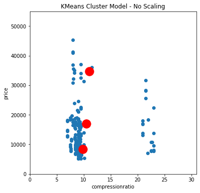
(a) Scatter Plot - No Scaling
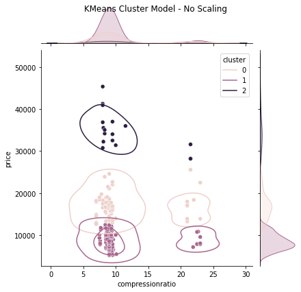
(b) Joint Plot - No Scaling
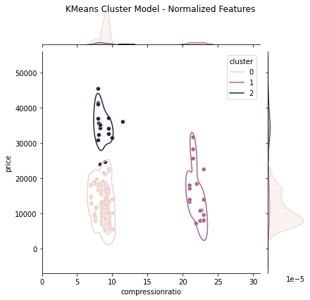
(c) Joint Plot - Normalized Scaling
Figure 8. KMeans Cluster Model Visualizations
5.2 Gaussian Mixture Model
Code
# Store all features in XX = dataset[['compressionratio', 'price']]# Gaussian Mixture Model to be usedmodel ='GMM'# Number of clusters to be createdn_clusters =3# Call Clustering Model Function and pass in features# model & number of clustersmyClusterModel(X, model, n_clusters)
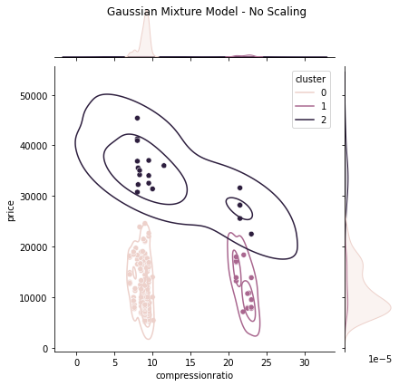
(a) Joint Plot - No Scaling
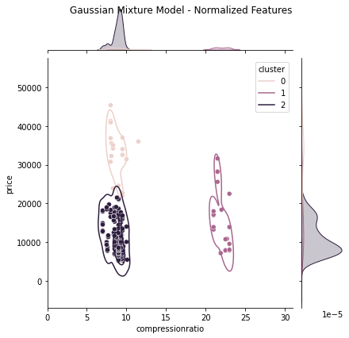
(b) Joint Plot - Normalized Scaling
Figure 9. Gaussian Mixture Cluster Model Visualizations
5.3 Spectral Clustering Model
Code
# Store all features in XX = dataset[['compressionratio', 'price']]# Spectral Clustering Model to be usedmodel ='SC'# Number of clusters to be createdn_clusters =3# Call Clustering Model Function and pass in features# model & number of clustersmyClusterModel(X, model, n_clusters)
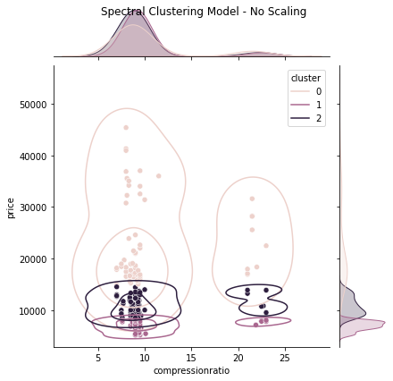
(a) Joint Plot - No Scaling
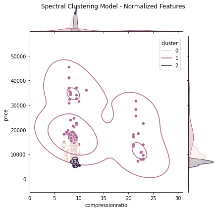
(b) Joint Plot - Normalized Scaling
Figure 10. Spectral Clustering Model Visualizations